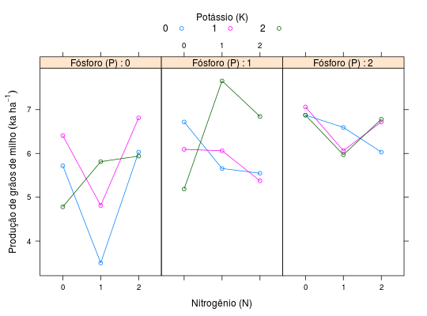

Experimento realizado em Jaboticabal - SP por Vilalta (1972) que, com um arranjo fatorial triplo, estudou a combinação de nitrogênio, fósforo e potássio, cada um com 3 níveis (27 combinações ao todo), sobre a produção de grãos de milho. Como o número de tratamentos é 27, não seria viável, em termos de controle local, ter blocos desse tamanho. Portanto, usou-se a técnica de confundimento para distribuir os 27 tratamentos em 3 blocos de tamanho 9. A técnica foi usada para confundir dois graus de liberdade da interação tripla com o efeito dos blocos. O grupo de confundimento adotado foi o W.
Um data.frame com 27 observações e 4 variáveis, em que
NPKblocprodCada parcela foi constituída de 6 linhas de plantio com 10 metros de comprimento, num total de 60 m\(^{2}\) e, como área útil, foram consideradas as 4 linhas centrais com 8 metros de comprimento (por desconsiderar 1 m em cada extremidade), perfazendo 32 m\(^{2}\). O híbrido de milho utilizado foi o HMD-7974.
BANZATTO; KRONKA (2013), Quadro 5.5.1, pág. 131.
Vilalta, O. A. (1972). Avaliação da produção de milho (Zea mays L.) em função da adubação NPK em um latossolo vermelho-escuro -- fase arenosa. Trabalho de Conclusão de Curso (Graduação em Agronomia). Faculdade de Ciências Agrárias e Veterinárias, Universidade Estadual Paulista, Jaboticabal, SP.
library(lattice) data(BanzattoQd5.5.1)#> Warning: data set ‘BanzattoQd5.5.1’ not founda <- with(BanzattoQd5.5.1, tapply(X = prod, INDEX = list(N, P, K), FUN = sum)) addmargins(apply(a, MARGIN = c(1, 2), FUN = sum))#> 0 1 2 Sum #> 0 16.906 18.001 20.812 55.719 #> 1 14.124 19.374 18.625 52.123 #> 2 18.781 17.766 19.531 56.078 #> Sum 49.811 55.141 58.968 163.920addmargins(apply(a, MARGIN = c(1, 3), FUN = sum))#> 0 1 2 Sum #> 0 19.313 19.562 16.844 55.719 #> 1 15.750 16.936 19.437 52.123 #> 2 17.609 18.906 19.563 56.078 #> Sum 52.672 55.404 55.844 163.920addmargins(apply(a, MARGIN = c(2, 3), FUN = sum))#> 0 1 2 Sum #> 0 15.250 18.030 16.531 49.811 #> 1 17.922 17.531 19.688 55.141 #> 2 19.500 19.843 19.625 58.968 #> Sum 52.672 55.404 55.844 163.920xyplot(prod ~ factor(N) | factor(P), data = BanzattoQd5.5.1, groups = K, type = c("p", "a"), layout = c(NA, 1), auto.key = list(title = "Potássio (K)", cex.title = 1, columns = 3), strip = strip.custom(strip.names = TRUE, var.name = "Fósforo (P)"), xlab = "Nitrogênio (N)", ylab = expression("Produção de grãos de milho"~(ka~ha^{-1})))